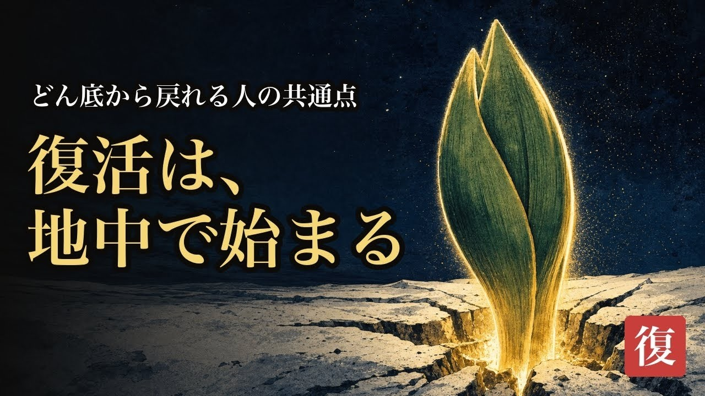

第34話 サムネ ・ 新方式（三井寿ライブテスト型）
洞察型サムネ A/B — 旧tierAは廃棄
ご指摘の新ハーネス＝三井寿でライブテスト中の型（シネマ比喩背景＋読み替えステートメント＋卦バッジ・作品名タグなし）を特定し、make-thumbnail-insight.pyとしてハーネス化。ep34を同型で作りました。
参考＝三井寿ライブ（今テスト中の実物）：

小見出し「どん底から戻れる人の共通点」＋特大「復活は、地中で始まる」＋卦バッジ。この文法に合わせています。


👉 どうしますか？
1AとBの両方でYouTube公式A/Bテスト（三井寿と同じ運用・推奨）
2Aのみ採用
3Bのみ採用
4コピー/背景を直す（指示ください）
選定後：TikTok縦カバーもこの勝ち版から生成し、概要欄→ショート2本→公開キットへ進みます。新ハーネス（insight型）は registry.thumb_insight 駆動で再現可能にしてあります。